Capítulo 7 Modelos de Datos Panel, Panel VAR y otros Modelos No Lineales
7.1 Modelos de Datos Panel y Panel VAR
7.1.1 Motivación
Los datos panel son una extensión natural del análisis de series de tiempo en el que observamos una misma variable a lo largo del tiempo, pero para múltiples individuos. Denotemos con \(Y_{it}\) el componente o individuo \(i\), \(i = 1, 2, \ldots, N\) en el tiempo \(t\), \(t = 1, 2, \ldots, T\). Típicamente, las series de tiempo en forma de panel se caracterizan por ser de dimensión de individuos corta y de dimensión temporal larga.
En general, escribiremos: \[\begin{equation} Y_{it} = \alpha_i + \beta_i X_{it} + U_{it} \end{equation}\]
Donde \(\alpha_i\) es un efecto fijo especificado como: \[\begin{equation} \alpha_i = \beta_0 + \gamma_i Z_i \end{equation}\]
7.1.2 Pruebas de Raíces Unitarias en Panel
Las pruebas de raíces unitarias para panel suelen ser usadas principalmente en casos macroeconómicos. De forma similar al caso de series univariadas, asumiremos una forma de AR(1) para una serie en panel: \[\begin{equation} \Delta Y_{it} = \mu_i + \rho_i Y_{i,t-1} + \sum_{j = 1}^{k_i} \varphi_{ij} \Delta Y_{i,t-j} + \varepsilon_{it} \tag{7.1} \end{equation}\]
Donde \(i = 1, \ldots, N\), \(t = 1, \ldots, T\) y \(\varepsilon_{it}\) es una v.a. iid que cumple con: \[\begin{eqnarray*} \mathbb{E}[\varepsilon_{it}] & = & 0 \\ \mathbb{E}[\varepsilon_{it}^2] & = & \sigma^2_i < \infty \\ \mathbb{E}[\varepsilon_{it}^4] & < & \infty \end{eqnarray*}\]
Al igual que en el caso univariado, en este tipo de pruebas buscamos identificar cuándo las series son I(1) y cuándo I(0). Para tal efecto, la prueba de raíz unitaria que utilizaremos está basada en una prueba Dickey-Fuller Aumentada en la cual la hipótesis nula (\(H_0\)) es que todas las series en el panel son no estacionarias, es decir, son I(1). Es decir, \[\begin{equation} H_0 : \rho_i = 0 \end{equation}\]
Por su parte, en el caso de la hipótesis alternativa tendremos dos: - \(H_1^A :\) Todas las series son I(0) – caso homogéneo, o
- \(H_1^B :\) Al menos una de las series es I(0) – caso heterogéneo
7.1.3 Ejemplo: Pruebas de Raíces Unitarias en Panel
Dependencias y configuración:
Descarga de datos de la librería plm:
data("EmplUK", package="plm")
data("Produc", package="plm")
data("Grunfeld", package="plm")
data("Wages", package="plm")Descripción de los datos: Grunfeld (1958) contiene 20 observaciones anuales de inversión bruta real (invest), valor real de la empresa (value) y valor real del capital (capital) para 10 grandes empresas de EE.UU. durante 1935–1954.
names(Grunfeld)## [1] "firm" "year" "inv" "value" "capital"
head(Grunfeld)## firm year inv value capital
## 1 1 1935 317.6 3078.5 2.8
## 2 1 1936 391.8 4661.7 52.6
## 3 1 1937 410.6 5387.1 156.9
## 4 1 1938 257.7 2792.2 209.2
## 5 1 1939 330.8 4313.2 203.4
## 6 1 1940 461.2 4643.9 207.2
Invest <- data.frame(split( Grunfeld$inv, Grunfeld$firm )) # individuals in columns
names(Invest)## [1] "X1" "X2" "X3" "X4" "X5" "X6" "X7" "X8" "X9" "X10"
names(Invest) <- c( "Firm_1", "Firm_2", "Firm_3", "Firm_4",
"Firm_5", "Firm_6", "Firm_7", "Firm_8",
"Firm_9", "Firm_10" )
names(Invest)## [1] "Firm_1" "Firm_2" "Firm_3" "Firm_4" "Firm_5" "Firm_6"
## [7] "Firm_7" "Firm_8" "Firm_9" "Firm_10"Gráfica:
plot(Invest$Firm_1, type = "l", col = 1, ylim = c(0, 1500), lty = 1,
xlab = "Tiempo", ylab = "Inversión bruta real")
lines(Invest$Firm_2, type = "l", col = 2, lty = 2)
lines(Invest$Firm_3, type = "l", col = 3, lty = 1)
lines(Invest$Firm_4, type = "l", col = 4, lty = 2)
lines(Invest$Firm_5, type = "l", col = 5, lty = 1)
lines(Invest$Firm_6, type = "l", col = 6, lty = 2)
lines(Invest$Firm_7, type = "l", col = 7, lty = 1)
lines(Invest$Firm_8, type = "l", col = 8, lty = 2)
lines(Invest$Firm_9, type = "l", col = 9, lty = 1)
lines(Invest$Firm_10, type = "l", col = 10, lty = 2)
legend("topleft", legend=c("Firm_1", "Firm_2", "Firm_3", "Firm_4", "Firm_5",
"Firm_6", "Firm_7", "Firm_8", "Firm_9", "Firm_10"),
col = c(1, 2, 3, 4, 5, 6, 7, 8, 9, 10), lty = 1:2)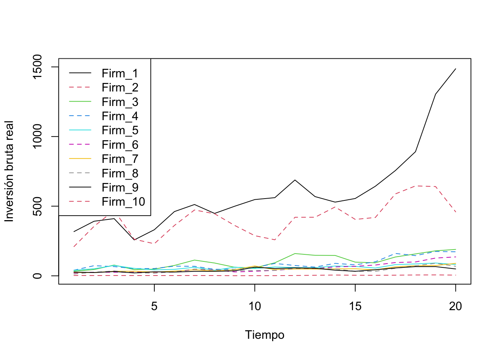
Figura 7.1: Evolución de la inversión por empresa
Prueba de raíz unitaria en panel (Levin et al. 2002; Im et al. 2003; Maddala and Wu 1999; Hadri 2000):
Consideremos la prueba de Levin et al. (2002):
## Warning in selectT(l, theTs): the time series is short##
## Levin-Lin-Chu Unit-Root Test (ex. var.: Individual Intercepts)
##
## data: log(Invest)
## z = -0.63214, p-value = 0.2636
## alternative hypothesis: stationarityAlternativamente:
ts_LInvest <- ts(log(Invest), start = 1935, end = 1954, freq = 1)
ts_DLInvest <- diff(ts(log(Invest), start = 1935, end = 1954, freq = 1),
lag = 1, differences = 1)
purtest(ts_LInvest, test = "levinlin", exo = "intercept",
lags = "AIC", pmax = 4)## Warning in selectT(l, theTs): the time series is short##
## Levin-Lin-Chu Unit-Root Test (ex. var.: Individual Intercepts)
##
## data: ts_LInvest
## z = -0.63214, p-value = 0.2636
## alternative hypothesis: stationarity
purtest(ts_DLInvest, test = "levinlin", exo = "intercept",
lags = "AIC", pmax = 4)## Warning in selectT(l, theTs): the time series is short##
## Levin-Lin-Chu Unit-Root Test (ex. var.: Individual Intercepts)
##
## data: ts_DLInvest
## z = -8.5076, p-value < 0.00000000000000022
## alternative hypothesis: stationarityConsideremos la prueba de raíz unitaria de Im, Pesaran y Shin (2003):
purtest(ts_LInvest, test = "ips", exo = "intercept",
lags = "AIC", pmax = 4)##
## Im-Pesaran-Shin Unit-Root Test (ex. var.: Individual
## Intercepts)
##
## data: ts_LInvest
## Wtbar = 0.6833, p-value = 0.7528
## alternative hypothesis: stationarity
purtest(ts_DLInvest, test = "ips", exo = "intercept",
lags = "AIC", pmax = 4)##
## Im-Pesaran-Shin Unit-Root Test (ex. var.: Individual
## Intercepts)
##
## data: ts_DLInvest
## Wtbar = -11.14, p-value < 0.00000000000000022
## alternative hypothesis: stationarity7.1.4 Ejemplo: Modelo Dif-in-Dif para el INPC de análisis clínicos (update nov-2022)
Este ejemplo modela el efecto que tiene que una empresa de laboratorios de análisis clínicos compre a sus competidores en diferentes ciudades del país. Para lo cual usaremos información del Índice Nacional de Precios al Consumidor de los servicios de análisis clínicos.
Dependencias y configuración:
Importamos Datos desde un archivo de Excel. Los datos están en formato panel e incluyen: - INPC (Índice Nacional de Precios al Consumidor (2QJul2018 = 100)) para un tipo de servicio. Fuente: https://www.inegi.org.mx/programas/inpc/2018/#Tabulados
Variable dicotómica que indica el momento en que inició el tratamiento
Variable dicotómica que identifica al grupo expuesto al tratamiento
Interacción entre el tiempo y el grupo tratado, además de una variable de tendencia
Otras variables de control
Partamos de la siguiente ecuación: \[\begin{equation} y_{it} = \beta_1 + \beta_2 T_t + \beta_3 D_i + \theta T_t \times D_i + \boldsymbol{\gamma} \mathbf{X}_{it} + \varepsilon_{it} \tag{7.2} \end{equation}\]
Donde \(y_{it}\) es la variable sobre la cual queremos evaluar el efecto de un tratamiento, \(\mathbf{X}_{it}\) es un conjunto de variables de control, que incluye a las variables de efectos fijos (temporales, de individuos o del tipo que se decida) y, en su caso, una tendencia, entre otras. Finalmente, las variables \(T_t\) y \(D_i\) son variables dicotómicas que identifican con el valor de 1 el momento a partir del cual se observa el tratamiento y con 0 en cualquier otro caso, y con 1 los individuos que fueron tratados y con 0 en cualquier otro caso, respectivamente.
De esta forma, el producto \(T_t \times D_i\) sería una variable dicotómica que indicaría con un 1 a aquellos individuos que fueron tratados a partir del momento en que se implementó el tratamiento y con 0 en cualquier otro caso. Bajo este escenario, \(\theta\) es un coeficiente que captura el efecto del tratamiento, condicional a que se ha controlado por una serie de factores.
Otra forma de ver lo que se indica en la ecuación (7.2) es como la comparación de la diferencia en diferencia descrita por: \[\begin{eqnarray} E & = & [ (\overline{y}_{exit} | treatment) - (\overline{y}_{baseline} | treatment) ] \nonumber \\ & & - [ (\overline{y}_{exit} | placebo) - (\overline{y}_{baseline} | placebo) ] \tag{7.3} \end{eqnarray}\]
La expresión (7.3) cuantifica el efecto que tiene el tratamiento como la diferencia de medias de dos grupos: un grupo tratado y otro no tratado. Dentro de los cuales se han comparado las medias respecto de una línea base. Podemos plantear esto desde esta otra perspectiva. Pensemos que solo tenemos dos periodos \(t = {1, 2}\), en el cual en 1 no ha ocurrido el tratamiento y en 2 ya ha ocurrido. Así, el cambio en la variable de respuesta para los individuos tratados será (suponiendo que omitimos la matriz \(\mathbf{X}_{it}\) en la ecuación (7.2)): \[\begin{eqnarray} \mathbb{E}[ y_{i2} | D_i = 1 ] - \mathbb{E}[ y_{i1} | D_i = 1 ] & = & ( \beta_1 + \beta_2 + \beta_3 + \theta ) - ( \beta_1 + \beta_3 ) \nonumber \\ & = & \beta_2 + \theta \tag{7.4} \end{eqnarray}\]
Ahora, sobre los no tratados: \[\begin{eqnarray} \mathbb{E}[ y_{i2} | D_i = 0 ] - \mathbb{E}[ y_{i1} | D_i = 0 ] & = & ( \beta_1 + \beta_2 ) - ( \beta_1 ) \nonumber \\ & = & \beta_2 \tag{7.5} \end{eqnarray}\]
Así, la diferencia en diferencia resulta de restar la ecuación (7.5) a la ecuación (7.4): \[\begin{eqnarray} & & ( \mathbb{E}[ y_{i2} | D_i = 1 ] - \mathbb{E}[ y_{i1} | D_i = 1 ] ) - ( \mathbb{E}[ y_{i2} | D_i = 0 ] - \mathbb{E}[ y_{i1} | D_i = 0 ] ) \nonumber \\ & & = \theta \tag{7.6} \end{eqnarray}\]
En nuestro caso, utilizaremos como tratamiento la entrada al mercado de un laboratorio de análisis clínicos en una ciudad determinada.
## [1] 13420 17## # A tibble: 6 × 17
## Fecha Mes Anio Ciudad INPC Dummy_FIRMA Marca_01 Marca_02
## <chr> <dbl> <dbl> <chr> <chr> <dbl> <dbl> <dbl>
## 1 Jul 2002 7 2002 Área Metro… 68.3… 0 0 0
## 2 Ago 2002 8 2002 Área Metro… 68.3… 0 0 0
## 3 Sep 2002 9 2002 Área Metro… 68.3… 0 0 0
## 4 Oct 2002 10 2002 Área Metro… 68.3… 0 0 0
## 5 Nov 2002 11 2002 Área Metro… 68.3… 0 0 0
## 6 Dic 2002 12 2002 Área Metro… 68.3… 0 0 0
## # ℹ 9 more variables: Marca_03 <dbl>, Marca_04 <dbl>, Marca_05 <dbl>,
## # Marca_06 <dbl>, Marca_07 <dbl>, Marca_08 <dbl>, Marca_09 <dbl>,
## # Marca_10 <dbl>, Marca_11 <dbl>Selección de ciudades:
Data <- Data[ which( Data$Ciudad != 'Atlacomulco, Edo. de Méx.' &
Data$Ciudad != 'Cancún, Q.R.' &
Data$Ciudad != 'Coatzacoalcos, Ver.' &
Data$Ciudad != 'Esperanza, Son.' &
Data$Ciudad != 'Izúcar de Matamoros, Pue.' &
Data$Ciudad != 'Pachuca, Hgo.' &
Data$Ciudad != 'Tuxtla Gutiérrez, Chis.' &
Data$Ciudad != 'Zacatecas, Zac.' ), ]Transformaciones:
# Log de INPC
Data$LINPC <- log( as.numeric(Data$INPC) , base = exp(1))
# Volvemos factor a la fecha
Data$Periodo <- factor(Data$Fecha, order = TRUE,
levels = c( "Jul 2002", "Ago 2002", "Sep 2002",
"Oct 2002", "Nov 2002", "Dic 2002",
"Ene 2003", "Feb 2003", "Mar 2003",
"Abr 2003", "May 2003", "Jun 2003",
"Jul 2003", "Ago 2003", "Sep 2003",
"Oct 2003", "Nov 2003", "Dic 2003",
"Ene 2004", "Feb 2004", "Mar 2004",
"Abr 2004", "May 2004", "Jun 2004",
"Jul 2004", "Ago 2004", "Sep 2004",
"Oct 2004", "Nov 2004", "Dic 2004",
"Ene 2005", "Feb 2005", "Mar 2005",
"Abr 2005", "May 2005", "Jun 2005",
"Jul 2005", "Ago 2005", "Sep 2005",
"Oct 2005", "Nov 2005", "Dic 2005",
"Ene 2006", "Feb 2006", "Mar 2006",
"Abr 2006", "May 2006", "Jun 2006",
"Jul 2006", "Ago 2006", "Sep 2006",
"Oct 2006", "Nov 2006", "Dic 2006",
"Ene 2007", "Feb 2007", "Mar 2007",
"Abr 2007", "May 2007", "Jun 2007",
"Jul 2007", "Ago 2007", "Sep 2007",
"Oct 2007", "Nov 2007", "Dic 2007",
"Ene 2008", "Feb 2008", "Mar 2008",
"Abr 2008", "May 2008", "Jun 2008",
"Jul 2008", "Ago 2008", "Sep 2008",
"Oct 2008", "Nov 2008", "Dic 2008",
"Ene 2009", "Feb 2009", "Mar 2009",
"Abr 2009", "May 2009", "Jun 2009",
"Jul 2009", "Ago 2009", "Sep 2009",
"Oct 2009", "Nov 2009", "Dic 2009",
"Ene 2010", "Feb 2010", "Mar 2010",
"Abr 2010", "May 2010", "Jun 2010",
"Jul 2010", "Ago 2010", "Sep 2010",
"Oct 2010", "Nov 2010", "Dic 2010",
"Ene 2011", "Feb 2011", "Mar 2011",
"Abr 2011", "May 2011", "Jun 2011",
"Jul 2011", "Ago 2011", "Sep 2011",
"Oct 2011", "Nov 2011", "Dic 2011",
"Ene 2012", "Feb 2012", "Mar 2012",
"Abr 2012", "May 2012", "Jun 2012",
"Jul 2012", "Ago 2012", "Sep 2012",
"Oct 2012", "Nov 2012", "Dic 2012",
"Ene 2013", "Feb 2013", "Mar 2013",
"Abr 2013", "May 2013", "Jun 2013",
"Jul 2013", "Ago 2013", "Sep 2013",
"Oct 2013", "Nov 2013", "Dic 2013",
"Ene 2014", "Feb 2014", "Mar 2014",
"Abr 2014", "May 2014", "Jun 2014",
"Jul 2014", "Ago 2014", "Sep 2014",
"Oct 2014", "Nov 2014", "Dic 2014",
"Ene 2015", "Feb 2015", "Mar 2015",
"Abr 2015", "May 2015", "Jun 2015",
"Jul 2015", "Ago 2015", "Sep 2015",
"Oct 2015", "Nov 2015", "Dic 2015",
"Ene 2016", "Feb 2016", "Mar 2016",
"Abr 2016", "May 2016", "Jun 2016",
"Jul 2016", "Ago 2016", "Sep 2016",
"Oct 2016", "Nov 2016", "Dic 2016",
"Ene 2017", "Feb 2017", "Mar 2017",
"Abr 2017", "May 2017", "Jun 2017",
"Jul 2017", "Ago 2017", "Sep 2017",
"Oct 2017", "Nov 2017", "Dic 2017",
"Ene 2018", "Feb 2018", "Mar 2018",
"Abr 2018", "May 2018", "Jun 2018",
"Jul 2018", "Ago 2018", "Sep 2018",
"Oct 2018", "Nov 2018", "Dic 2018",
"Ene 2019", "Feb 2019", "Mar 2019",
"Abr 2019", "May 2019", "Jun 2019",
"Jul 2019", "Ago 2019", "Sep 2019",
"Oct 2019", "Nov 2019", "Dic 2019",
"Ene 2020", "Feb 2020", "Mar 2020",
"Abr 2020", "May 2020", "Jun 2020",
"Jul 2020", "Ago 2020", "Sep 2020",
"Oct 2020", "Nov 2020", "Dic 2020",
"Ene 2021", "Feb 2021", "Mar 2021",
"Abr 2021", "May 2021", "Jun 2021",
"Jul 2021", "Ago 2021", "Sep 2021",
"Oct 2021", "Nov 2021", "Dic 2021",
"Ene 2022", "Feb 2022", "Mar 2022",
"Abr 2022", "May 2022", "Jun 2022",
"Jul 2022", "Ago 2022", "Sep 2022", "
Oct 2022", "Nov 2022", "Dic 2022" ))La Figura 7.2 muestra la evolución del logaritmo del INPC de análisis clínicos para las 47 ciudades del panel (líneas grises); la línea roja es el promedio simple entre ciudades. Se aprecia una tendencia común al alza y una dispersión entre ciudades que se reduce hacia el final de la muestra.
Data %>%
ggplot( aes(x = Periodo, y = LINPC, group = Ciudad) ) +
geom_line(color = "grey70", linewidth = 0.3) +
stat_summary(aes(group = 1), fun = mean, geom = "line",
color = "darkred", linewidth = 0.9) +
scale_x_discrete(breaks = levels(Data$Periodo)[
seq(1, nlevels(Data$Periodo), by = 12)]) +
labs(x = NULL, y = "log(INPC) de análisis clínicos") +
theme(axis.text.x = element_text( size = 8, angle = 90, vjust = 0.5))
Figura 7.2: Logaritmo del INPC de análisis clínicos por ciudad (líneas grises) y promedio entre ciudades (línea roja)
Hagamos una prueba de Raíces Unitarias.
Conversión a formato ancho:
## # A tibble: 6 × 48
## Fecha `Acapulco, Gro.` `Aguascalientes, Ags.` Área Metropolitana d…¹
## <chr> <dbl> <dbl> <dbl>
## 1 Abr … 4.39 4.35 4.26
## 2 Abr … 4.39 4.36 4.31
## 3 Abr … 4.44 4.36 4.36
## 4 Abr … 4.47 4.33 4.40
## 5 Abr … 4.54 4.38 4.42
## 6 Abr … 4.60 4.41 4.44
## # ℹ abbreviated name: ¹`Área Metropolitana de la Cd. de México`
## # ℹ 44 more variables: `Campeche, Camp.` <dbl>,
## # `Cd. Acuña, Coah.` <dbl>, `Cd. Jiménez, Chih.` <dbl>,
## # `Cd. Juárez, Chih.` <dbl>, `Chetumal, Q.R.` <dbl>,
## # `Chihuahua, Chih.` <dbl>, `Colima, Col.` <dbl>,
## # `Córdoba, Ver.` <dbl>, `Cortazar, Gto.` <dbl>,
## # `Cuernavaca, Mor.` <dbl>, `Culiacán, Sin.` <dbl>, …Series de tiempo:
ts_LINPC <- ts( LINPC[c( 2:48 )],
start = c(2002, 7),
freq = 12)
ts_DLINPC <- diff(ts( LINPC[c( 2:48 )],
start = c(2002, 7),
freq = 12),
lag = 1,
differences = 1)Prueba de raíz unitaria en panel:
Rezagos óptimos: \[\begin{eqnarray*} p & = & Int(4*(T/100)^{(1/4)}) \\ & = & Int(4*(244/100)^{(1/4)}) \\ & = & Int(4.99) \\ & = & 4 \end{eqnarray*}\]
Prueba de Levin et al. (2002):
purtest(ts_LINPC, test = "levinlin", exo = "trend", # exo = c("none", "intercept", "trend"),
lags = "AIC", pmax = 4)##
## Levin-Lin-Chu Unit-Root Test (ex. var.: Individual Intercepts
## and Trend)
##
## data: ts_LINPC
## z = -56.022, p-value < 2.2e-16
## alternative hypothesis: stationarity
purtest(ts_DLINPC, test = "levinlin", exo = "trend", # exo = c("none", "intercept", "trend"),
lags = "AIC", pmax = 4)##
## Levin-Lin-Chu Unit-Root Test (ex. var.: Individual Intercepts
## and Trend)
##
## data: ts_DLINPC
## z = -107.84, p-value < 2.2e-16
## alternative hypothesis: stationarityPrueba de Choi (2001):
purtest(ts_LINPC, test = "logit", exo = "trend", # exo = c("none", "intercept", "trend"),
lags = "AIC", pmax = 4)##
## Choi's Logit Unit-Root Test (ex. var.: Individual Intercepts
## and Trend)
##
## data: ts_LINPC
## L* = -85.506, df = 239, p-value < 2.2e-16
## alternative hypothesis: stationarity
purtest(ts_DLINPC, test = "logit", exo = "trend", # exo = c("none", "intercept", "trend"),
lags = "AIC", pmax = 4)##
## Choi's Logit Unit-Root Test (ex. var.: Individual Intercepts
## and Trend)
##
## data: ts_DLINPC
## L* = -278.56, df = 239, p-value < 2.2e-16
## alternative hypothesis: stationarityPrueba de Hadri (2000):
purtest(ts_LINPC, test = "hadri", exo = "trend", # exo = c("none", "intercept", "trend"),
lags = "AIC", pmax = 4)##
## Hadri Test (ex. var.: Individual Intercepts and Trend)
## (Heterosked. Consistent)
##
## data: ts_LINPC
## z = -2.7, p-value = 0.9965
## alternative hypothesis: at least one series has a unit root
purtest(ts_DLINPC, test = "hadri", exo = "trend", # exo = c("none", "intercept", "trend"),
lags = "AIC", pmax = 4)##
## Hadri Test (ex. var.: Individual Intercepts and Trend)
## (Heterosked. Consistent)
##
## data: ts_DLINPC
## z = -8.9351, p-value = 1
## alternative hypothesis: at least one series has a unit rootEstimación PANEL con TREND:
# Modelo Final
fixed <- plm( LINPC ~ Dummy_FIRMA + Marca_01 + Marca_02 + Marca_03 + Marca_04 + Marca_05 +
Marca_06 + Marca_07 + Marca_08 + Marca_09 + Marca_10 + Marca_11 + as.numeric(Periodo),
data = Data,
index=c("Ciudad", "Periodo"),
model = "within")## Warning in pdata.frame(data, index): at least one NA in at least one index dimension in resulting pdata.frame
## to find out which, use, e.g., table(index(your_pdataframe), useNA = "ifany")
summary(fixed)## Oneway (individual) effect Within Model
##
## Call:
## plm(formula = LINPC ~ Dummy_FIRMA + Marca_01 + Marca_02 + Marca_03 +
## Marca_04 + Marca_05 + Marca_06 + Marca_07 + Marca_08 + Marca_09 +
## Marca_10 + Marca_11 + as.numeric(Periodo), data = Data, model = "within",
## index = c("Ciudad", "Periodo"))
##
## Balanced Panel: n = 47, T = 243, N = 11421
##
## Residuals:
## Min. 1st Qu. Median 3rd Qu. Max.
## -0.4220510 -0.0416329 0.0026154 0.0471479 0.2275376
##
## Coefficients:
## Estimate Std. Error t-value Pr(>|t|)
## Dummy_FIRMA -0.05972092 0.01892851 -3.1551 0.0016087 **
## Marca_01 0.04545555 0.02069006 2.1970 0.0280423 *
## Marca_02 0.05452288 0.02372909 2.2977 0.0215956 *
## Marca_03 -0.02925504 0.02041744 -1.4328 0.1519296
## Marca_04 -0.07440826 0.02418665 -3.0764 0.0021000 **
## Marca_05 0.02633713 0.01045219 2.5198 0.0117567 *
## Marca_06 0.12521494 0.01991655 6.2870 3.356e-10 ***
## Marca_07 -0.09242328 0.02514895 -3.6750 0.0002389 ***
## Marca_08 0.03362324 0.02086579 1.6114 0.1071193
## Marca_09 0.05630828 0.02121641 2.6540 0.0079655 **
## Marca_10 -0.04866105 0.02638856 -1.8440 0.0652062 .
## Marca_11 -0.03582620 0.03031018 -1.1820 0.2372361
## as.numeric(Periodo) 0.00220384 0.00001018 216.4961 < 2.2e-16 ***
## ---
## Signif. codes: 0 '***' 0.001 '**' 0.01 '*' 0.05 '.' 0.1 ' ' 1
##
## Total Sum of Squares: 330.79
## Residual Sum of Squares: 60.08
## R-Squared: 0.81838
## Adj. R-Squared: 0.81743
## F-statistic: 3937.79 on 13 and 11361 DF, p-value: < 2.22e-16
# Modelo Final
fixed <- plm( LINPC ~ Dummy_FIRMA + as.numeric(Periodo),
data = Data,
index=c("Ciudad", "Periodo"),
model = "within")## Warning in pdata.frame(data, index): at least one NA in at least one index dimension in resulting pdata.frame
## to find out which, use, e.g., table(index(your_pdataframe), useNA = "ifany")
summary(fixed)## Oneway (individual) effect Within Model
##
## Call:
## plm(formula = LINPC ~ Dummy_FIRMA + as.numeric(Periodo), data = Data,
## model = "within", index = c("Ciudad", "Periodo"))
##
## Balanced Panel: n = 47, T = 243, N = 11421
##
## Residuals:
## Min. 1st Qu. Median 3rd Qu. Max.
## -0.4337032 -0.0421466 0.0026796 0.0480377 0.2504866
##
## Coefficients:
## Estimate Std. Error t-value Pr(>|t|)
## Dummy_FIRMA -0.02239578 0.00417897 -5.3592 0.00000008525
## as.numeric(Periodo) 0.00220318 0.00001032 213.4825 < 2.2e-16
##
## Dummy_FIRMA ***
## as.numeric(Periodo) ***
## ---
## Signif. codes: 0 '***' 0.001 '**' 0.01 '*' 0.05 '.' 0.1 ' ' 1
##
## Total Sum of Squares: 330.79
## Residual Sum of Squares: 61.94
## R-Squared: 0.81275
## Adj. R-Squared: 0.81196
## F-statistic: 24680.5 on 2 and 11372 DF, p-value: < 2.22e-167.1.5 Panel VAR
En esta sección extenderemos el caso del modelo VAR(p) a uno en forma panel. En este caso asumimos que las variables exógenas son los \(p\) rezagos de las \(k\) variables endógenas. Consideremos el siguiente caso de un modelo panel VAR con efectos fijos –ciertamente es posible hacer estimaciones con efectos aleatorios, no obstante, requiere de supuestos adicionales que no contemplamos en estas notas–, el cual es la forma más común de estimación: \[\begin{equation} \mathbf{Y}_{it} = \mu_i + \sum_{l = 1}^p \mathbf{A}_l \mathbf{Y}_{i t - l} + \mathbf{B} \mathbf{X}_{it} + \varepsilon_{it} \tag{7.7} \end{equation}\]
Donde \(\mathbf{Y}_{it}\) es un vector de variables endógenas estacionarias para la unidad de corte transversal \(i\) en el tiempo \(t\), \(\mathbf{X}_{it}\) es una matriz que contiene variables exógenas, y \(\varepsilon_{it}\) es un término de error que cumple con: \[\begin{eqnarray*} \mathbb{E}[\varepsilon_{it}] & = & 0 \\ Var[\varepsilon_{it}] & = & \Sigma_\varepsilon \end{eqnarray*}\]
Donde \(\Sigma_\varepsilon\) es una matriz definida positiva.
7.1.5.1 ¿Por qué no estimar por MCO? El sesgo de Nickell
A diferencia del modelo panel estático, en la ecuación (7.7) los regresores incluyen rezagos de la variable dependiente. Esto invalida a los estimadores tradicionales de panel: el estimador within (de efectos fijos) elimina \(\mu_i\) restando la media individual, pero la media de \(\mathbf{Y}_{it}\) contiene información de todos los periodos, incluidos los errores pasados, por lo que el regresor transformado queda correlacionado con el error transformado. El sesgo resultante, documentado por Nickell (1981), es de orden \(1/T\): resulta despreciable en paneles largos, pero considerable en los paneles macro y microeconómicos típicos, donde \(T\) es pequeño (\(T \leq 10\), por ejemplo) aunque \(N\) sea grande. Por ello, la literatura de paneles dinámicos estima el PVAR por el método generalizado de momentos (GMM) sobre una transformación del modelo que elimine los efectos fijos sin inducir esa correlación.
7.1.5.2 Transformaciones: primeras diferencias y desviaciones ortogonales
La transformación más directa es la de primeras diferencias (FD): \[\begin{equation} \Delta \mathbf{Y}_{it} = \sum_{l = 1}^p \mathbf{A}_l \Delta \mathbf{Y}_{i t - l} + \mathbf{B} \Delta \mathbf{X}_{it} + \Delta \varepsilon_{it} \tag{7.8} \end{equation}\]
que elimina \(\mu_i\), pero con dos costos: (i) el nuevo error \(\Delta \varepsilon_{it} = \varepsilon_{it} - \varepsilon_{i,t-1}\) sigue por construcción un proceso MA(1), de modo que está correlacionado con \(\Delta \mathbf{Y}_{i,t-1}\) y la estimación requiere instrumentos; y (ii) cada hueco en el panel (dato faltante) elimina dos observaciones transformadas.
Una alternativa es la transformación de desviaciones ortogonales hacia adelante (FOD, forward orthogonal deviations) de Arellano y Bover (1995): a cada observación se le resta el promedio de las observaciones futuras disponibles de la misma unidad, reescalando para preservar la varianza: \[\begin{equation} \tilde{\mathbf{Y}}_{it} = c_{it} \left[ \mathbf{Y}_{it} - \frac{1}{T - t} \left( \mathbf{Y}_{i,t+1} + \ldots + \mathbf{Y}_{iT} \right) \right], \quad c_{it} = \sqrt{\frac{T-t}{T-t+1}}. \tag{7.9} \end{equation}\]
Como solo usa información futura, la transformación no introduce autocorrelación en los errores transformados (si \(\varepsilon_{it}\) no está autocorrelacionado, \(\tilde{\varepsilon}_{it}\) tampoco lo está) y solo se pierde la última observación de cada unidad, lo que la hace preferible en paneles cortos o con huecos. En el paquete panelvar de R, el argumento transformation de la función pvargmm() permite elegir entre ambas: "fd" (primeras diferencias) o "fod" (desviaciones ortogonales).
7.1.5.3 Estimación GMM: en diferencias y en sistema
Una vez transformado el modelo, el estimador GMM en diferencias de Arellano y Bond (1991) explota como instrumentos los niveles rezagados de las variables: bajo el supuesto de que los errores no están autocorrelacionados, los niveles \(\mathbf{Y}_{i,t-s}\) con \(s \geq 2\) no están correlacionados con \(\Delta \varepsilon_{it}\), lo que genera las condiciones de momentos \[\begin{equation} \mathbb{E}\left[ \mathbf{Y}_{i,t-s} \, \Delta \varepsilon_{it}' \right] = 0, \quad s = 2, 3, \ldots, t-1. \tag{7.10} \end{equation}\]
Cuando las series son muy persistentes (cercanas a raíz unitaria), los niveles rezagados son instrumentos débiles de las diferencias y el GMM en diferencias se comporta mal. El estimador GMM en sistema de Blundell y Bond (1998) añade al sistema las ecuaciones en niveles, instrumentadas con las diferencias rezagadas, bajo un supuesto adicional sobre las condiciones iniciales del proceso (que las desviaciones iniciales respecto del estado estacionario no estén correlacionadas con los efectos fijos). En pvargmm(), esta variante se activa con system_instruments = TRUE.
Dos aspectos prácticos completan la especificación:
-
Proliferación de instrumentos. El número de instrumentos de la ecuación (7.10) crece con \(T^2\) y con el número de variables. Demasiados instrumentos sobreajustan las variables endógenas y debilitan las pruebas de especificación. Roodman (2009) recomienda limitar los rezagos usados como instrumentos (argumentos
max_instr_dependent_varsymin_instr_dependent_vars) o colapsar la matriz de instrumentos (collapse = TRUE). -
Una y dos etapas. El estimador de dos etapas (
steps = "twostep") utiliza la matriz de ponderación óptima estimada en la primera etapa y es más eficiente, aunque sus errores estándar deben corregirse en muestras pequeñas (Windmeijer 2005).
7.1.5.4 Diagnóstico y selección de rezagos
La validez del conjunto de instrumentos se evalúa con la prueba de sobreidentificación de Hansen (\(J\)), cuya hipótesis nula es que los instrumentos son válidos (no correlacionados con el error); valores \(p\) demasiado bajos indican instrumentos inválidos, pero valores \(p\) sospechosamente cercanos a 1 suelen ser síntoma de demasiados instrumentos. Adicionalmente, se examina la autocorrelación de los errores en diferencias: se espera autocorrelación de orden 1 (por construcción del MA(1)), pero no de orden 2 — si la hubiera, los instrumentos con \(s = 2\) dejarían de ser válidos. Finalmente, el orden \(p\) del PVAR se selecciona con los criterios de Andrews y Lu (2001) (MMSC-AIC, MMSC-BIC, MMSC-HQIC), que son análogos a los criterios de información tradicionales pero se construyen a partir del estadístico \(J\) de Hansen; los calcularemos con la función Andrews_Lu_MMSC() en los ejemplos.
7.2 Ejemplos: Panel VAR(p)
Dependencias y configuración:
7.2.1 Ejemplo 1
La estimación sigue la literatura de panel dinámico de Arellano y Bond (1991), Blundell y Bond (1998) y Roodman (2009). Este conjunto de datos describe el empleo, los salarios, el capital y la producción de 140 empresas en el Reino Unido durante 1976–1984. Se estima un modelo en el que el empleo (\(n\)) es explicado por sus valores pasados (2 rezagos), los valores actuales y el primer rezago de los salarios (\(w\)) y la producción (\(ys\)), y el valor actual del capital (\(k\)).
## [1] "c1" "ind" "year" "emp" "wage" "cap"
## [7] "indoutpt" "n" "w" "k" "ys" "rec"
## [13] "yearm1" "id" "nL1" "nL2" "wL1" "kL1"
## [19] "kL2" "ysL1" "ysL2" "yr1976" "yr1977" "yr1978"
## [25] "yr1979" "yr1980" "yr1981" "yr1982" "yr1983" "yr1984"## c1 ind year emp wage cap indoutpt n w
## 1 1-1 7 1977 5.041 13.1516 0.5894 95.7072 1.617604 2.576543
## 2 2-1 7 1978 5.600 12.3018 0.6318 97.3569 1.722767 2.509746
## 3 3-1 7 1979 5.015 12.8395 0.6771 99.6083 1.612433 2.552526
## 4 4-1 7 1980 4.715 13.8039 0.6171 100.5501 1.550749 2.624951
## 5 5-1 7 1981 4.093 14.2897 0.5076 99.5581 1.409278 2.659539
## 6 6-1 7 1982 3.166 14.8681 0.4229 98.6151 1.152469 2.699218
## k ys rec yearm1 id nL1 nL2 wL1
## 1 -0.5286502 4.561294 1 1977 1 NA NA NA
## 2 -0.4591824 4.578383 2 1977 1 1.617604 NA 2.576543
## 3 -0.3899363 4.601245 3 1978 1 1.722767 1.617604 2.509746
## 4 -0.4827242 4.610656 4 1979 1 1.612433 1.722767 2.552526
## 5 -0.6780615 4.600741 5 1980 1 1.550749 1.612433 2.624951
## 6 -0.8606195 4.591224 6 1981 1 1.409278 1.550749 2.659539
## kL1 kL2 ysL1 ysL2 yr1976 yr1977 yr1978 yr1979
## 1 NA NA NA NA 0 1 0 0
## 2 -0.5286502 NA 4.561294 NA 0 0 1 0
## 3 -0.4591824 -0.5286502 4.578383 4.561294 0 0 0 1
## 4 -0.3899363 -0.4591824 4.601245 4.578383 0 0 0 0
## 5 -0.4827242 -0.3899363 4.610656 4.601245 0 0 0 0
## 6 -0.6780615 -0.4827242 4.600741 4.610656 0 0 0 0
## yr1980 yr1981 yr1982 yr1983 yr1984
## 1 0 0 0 0 0
## 2 0 0 0 0 0
## 3 0 0 0 0 0
## 4 1 0 0 0 0
## 5 0 1 0 0 0
## 6 0 0 1 0 0Estimación
#?pvargmm
Arellano_Bond_1991_table4b <- pvargmm( dependent_vars = c("n"),
lags = 2,
exog_vars = c("w", "wL1", "k", "ys", "ysL1", "yr1979", "yr1980", "yr1981", "yr1982",
"yr1983", "yr1984"),
transformation = "fd", data = abdata, panel_identifier = c("id", "year"),
steps = c("twostep"),
system_instruments = FALSE,
max_instr_dependent_vars = 99,
min_instr_dependent_vars = 2L,
collapse = FALSE)
summary(Arellano_Bond_1991_table4b)Dynamic Panel VAR estimation, two-step GMM
Transformation: First-differences
Group variable: id
Time variable: year
Number of observations = 611
Number of groups = 140
Obs per group: min = 4
Obs per group: avg = 4.36428571428571
Obs per group: max = 6
Number of instruments = 38
| n | |
|---|---|
| lag1_n | 0.4742* |
| (0.1854) | |
| lag2_n | -0.0530 |
| (0.0517) | |
| w | -0.5132*** |
| (0.1456) | |
| wL1 | 0.2246 |
| (0.1419) | |
| k | 0.2927*** |
| (0.0626) | |
| ys | 0.6098*** |
| (0.1563) | |
| ysL1 | -0.4464* |
| (0.2173) | |
| yr1979 | 0.0105 |
| (0.0099) | |
| yr1980 | 0.0247 |
| (0.0158) | |
| yr1981 | -0.0158 |
| (0.0267) | |
| yr1982 | -0.0374 |
| (0.0300) | |
| yr1983 | -0.0393 |
| (0.0347) | |
| yr1984 | -0.0495 |
| (0.0349) | |
| ***p < 0.001; **p < 0.01; *p < 0.05 | |
Instruments for equation
Standard
w, wL1, k, ys, ysL1, yr1979, yr1980, yr1981, yr1982, yr1983, yr1984
GMM-type
Dependent vars: L(2,6))
Collapse = FALSE
Hansen test of overid. restrictions: chi2(25) = 30.11 Prob > chi2 = 0.22
(Robust, but weakened by many instruments.)
7.2.2 Ejemplo 2:
Se utiliza un conjunto de datos panel de 265 municipios suecos durante 9 años (1979–1987). Las variables incluyen el gasto total (expenditures), los ingresos propios (revenues) y las transferencias intergubernamentales recibidas por el municipio (grants). Fuente: Dahlberg y Johansson (2000). Las transferencias del gobierno central al gobierno local son de tres tipos: apoyo a municipios con baja capacidad fiscal, transferencias para financiar ciertas actividades del gobierno local, y transferencias destinadas a inversiones específicas.
## [1] "id" "year" "expenditures" "revenues"
## [5] "grants"
head(Dahlberg)## id year expenditures revenues grants
## 1 114 1979 0.0229736 0.0181770 0.0054429
## 2 114 1980 0.0266307 0.0209142 0.0057304
## 3 114 1981 0.0273253 0.0210836 0.0056647
## 4 114 1982 0.0288704 0.0234310 0.0058859
## 5 114 1983 0.0226474 0.0179979 0.0055908
## 6 114 1984 0.0215601 0.0179949 0.0047536Estimación:
ex1_dahlberg_data <- pvargmm(dependent_vars = c("expenditures", "revenues", "grants"),
lags = 1,
transformation = "fod",
data = Dahlberg,
panel_identifier=c("id", "year"),
steps = c("twostep"),
system_instruments = FALSE,
max_instr_dependent_vars = 99,
max_instr_predet_vars = 99,
min_instr_dependent_vars = 2L,
min_instr_predet_vars = 1L,
collapse = FALSE
)## Warning in pvargmm(dependent_vars = c("expenditures", "revenues",
## "grants"), : The matrix D_e is singular, therefore the general
## inverse is used
summary(ex1_dahlberg_data)Dynamic Panel VAR estimation, two-step GMM
Transformation: Forward orthogonal deviations
Group variable: id
Time variable: year
Number of observations = 1855
Number of groups = 265
Obs per group: min = 7
Obs per group: avg = 7
Obs per group: max = 7
Number of instruments = 252
| expenditures | revenues | grants | |
|---|---|---|---|
| lag1_expenditures | 0.2846*** | 0.2583** | 0.0167 |
| (0.0664) | (0.0795) | (0.0172) | |
| lag1_revenues | -0.0470 | 0.0588 | -0.0405** |
| (0.0637) | (0.0726) | (0.0151) | |
| lag1_grants | -1.6746*** | -2.2367*** | 0.3204*** |
| (0.2818) | (0.2846) | (0.0521) | |
| ***p < 0.001; **p < 0.01; *p < 0.05 | |||
Instruments for equation
Standard
GMM-type
Dependent vars: L(2,7))
Collapse = FALSE
Hansen test of overid. restrictions: chi2(243) = 263.01 Prob > chi2 = 0.18
(Robust, but weakened by many instruments.)
Selección de rezagos óptimos mediante el procedimiento de Andrews y Lu (2001):
Andrews_Lu_MMSC(ex1_dahlberg_data)## $MMSC_BIC
## [1] -1610.877
##
## $MMSC_AIC
## [1] -234.9924
##
## $MMSC_HQIC
## [1] -792.3698
ex2_dahlberg_data <- pvargmm(dependent_vars = c("expenditures", "revenues", "grants"),
lags = 2,
transformation = "fod",
data = Dahlberg,
panel_identifier=c("id", "year"),
steps = c("twostep"),
system_instruments = FALSE,
max_instr_dependent_vars = 99,
max_instr_predet_vars = 99,
min_instr_dependent_vars = 2L,
min_instr_predet_vars = 1L,
collapse = FALSE)## Warning in pvargmm(dependent_vars = c("expenditures", "revenues",
## "grants"), : The matrix D_e is singular, therefore the general
## inverse is used
summary(ex2_dahlberg_data)Dynamic Panel VAR estimation, two-step GMM
Transformation: Forward orthogonal deviations
Group variable: id
Time variable: year
Number of observations = 1590
Number of groups = 265
Obs per group: min = 6
Obs per group: avg = 6
Obs per group: max = 6
Number of instruments = 243
| expenditures | revenues | grants | |
|---|---|---|---|
| lag1_expenditures | 0.2572** | 0.2486* | 0.0135 |
| (0.0893) | (0.1018) | (0.0178) | |
| lag1_revenues | -0.1219 | -0.0634 | -0.0293 |
| (0.0879) | (0.0997) | (0.0171) | |
| lag1_grants | -3.0718*** | -3.5849*** | 0.1581* |
| (0.5941) | (0.6168) | (0.0636) | |
| lag2_expenditures | -0.0247 | 0.0252 | 0.0178 |
| (0.0791) | (0.0834) | (0.0157) | |
| lag2_revenues | -0.2584** | -0.2446** | -0.0237 |
| (0.0785) | (0.0800) | (0.0157) | |
| lag2_grants | -1.5265*** | -1.6687*** | 0.0702 |
| (0.1873) | (0.2113) | (0.0586) | |
| ***p < 0.001; **p < 0.01; *p < 0.05 | |||
Instruments for equation
Standard
GMM-type
Dependent vars: L(2,6))
Collapse = FALSE
Hansen test of overid. restrictions: chi2(225) = 260.11 Prob > chi2 = 0.054
(Robust, but weakened by many instruments.)
Andrews_Lu_MMSC(ex2_dahlberg_data)## $MMSC_BIC
## [1] -1486.935
##
## $MMSC_AIC
## [1] -213.8917
##
## $MMSC_HQIC
## [1] -734.1071Al igual que en el VAR de series de tiempo (Capítulo 5), la estabilidad del Panel VAR se verifica con los eigenvalores de la matriz compañera del sistema: el proceso es estable si todos los módulos son estrictamente menores que 1, es decir, si todas las raíces se encuentran dentro del círculo unitario. La Figura 7.3 muestra las tres raíces del modelo estimado, todas al interior del círculo, por lo que el PVAR(1) es estable:
## Eigenvalue stability condition:
##
## Eigenvalue Modulus
## 1 0.5370657+0.00000000i 0.53706574
## 2 0.0633651+0.06442426i 0.09036383
## 3 0.0633651-0.06442426i 0.09036383
##
## All the eigenvalues lie inside the unit circle.
## PVAR satisfies stability condition.
plot(stab_ex1_dahlberg_data) +
coord_fixed() +
scale_x_continuous(name = "Parte real") +
scale_y_continuous(name = "Parte imaginaria") +
labs(title = "Raíces de la matriz compañera")
Figura 7.3: Raíces de la matriz compañera del Panel VAR(1) estimado. El proceso es estable porque todos los eigenvalores están dentro del círculo unitario.
Funciones de impulso-respuesta (comentadas; descomentar para ejecutar):
# ex1_dahlberg_data_oirf <- oirf(ex1_dahlberg_data, n.ahead = 8)
#
# ex1_dahlberg_data_girf <- girf(ex1_dahlberg_data, n.ahead = 8, ma_approx_steps= 8)
#
# ex1_dahlberg_data_bs <- bootstrap_irf(ex1_dahlberg_data, typeof_irf = c("GIRF"),
# n.ahead = 8,
# nof_Nstar_draws = 500,
# confidence.band = 0.95)
#
# plot(ex1_dahlberg_data_girf, ex1_dahlberg_data_bs)7.3 Cointegración
La extensión de los conceptos de cointegración al contexto panel sigue la misma lógica que en el caso univariado: si las series \(Y_{it}\) son \(I(1)\) pero existe una combinación lineal estacionaria, se dice que cointegran. El procedimiento más utilizado es el propuesto por Pedroni (1999, 2004), que plantea siete estadísticos de prueba bajo la hipótesis nula de no cointegración, permitiendo tanto coeficientes de cointegración homogéneos como heterogéneos entre individuos.
7.3.1 Prueba de Pedroni (1999, 2004)
Para cada individuo \(i = 1, \ldots, N\) se estima la regresión de cointegración de largo plazo: \[\begin{equation} Y_{it} = \alpha_i + \delta_i t + \boldsymbol{\beta}_i^{\prime} \mathbf{X}_{it} + e_{it} \tag{7.11} \end{equation}\]
donde \(\mathbf{X}_{it}\) es un vector \(m \times 1\) de regresores \(I(1)\), \(\alpha_i\) es un efecto fijo individual y \(\delta_i t\) es una tendencia determinista individual (que puede omitirse). La hipótesis nula es que los residuales \(\hat{e}_{it}\) tienen raíz unitaria, es decir, no existe cointegración para ningún individuo del panel: \[\begin{equation} H_0 : \hat{e}_{it} = \hat{e}_{i,t-1} + v_{it} \quad \forall \, i \end{equation}\]
Para construir los estadísticos se estima, para cada \(i\), la regresión auxiliar aumentada sobre los residuales: \[\begin{equation} \Delta \hat{e}_{it} = \hat{\rho}_i \hat{e}_{i,t-1} + \sum_{j=1}^{k_i} \hat{\psi}_{ij} \Delta \hat{e}_{i,t-j} + \hat{v}_{it} \tag{7.12} \end{equation}\]
A partir de los residuales \(\hat{v}_{it}\) y de las varianzas de largo plazo \(\hat{L}_{11i}^2\) (que corrigen la correlación serial), Pedroni (1999) construye siete estadísticos divididos en dos grupos:
Estadísticos de dimensión interna (within-dimension). Imponen un coeficiente autorregresivo \(\rho_i = \rho\) común al hacer la suma sobre individuos. Se componen del estadístico Panel-\(\nu\) (cociente de varianzas, diverge hacia la derecha bajo \(H_1\)), el Panel-\(\rho\) (análogo al estadístico \(\rho\) de Phillips-Perron), el Panel-\(t\) no paramétrico y el Panel-ADF paramétrico.
Estadísticos de dimensión entre grupos (between-dimension). Promedian estadísticos individuales sobre los \(N\) individuos, permitiendo que \(\rho_i\) difiera entre individuos bajo la alternativa. Se componen del Group-\(\rho\), el Group-\(t\) no paramétrico y el Group-ADF paramétrico.
Bajo la hipótesis nula de no cointegración, todos los estadísticos estandarizados convergen en distribución a una normal estándar: \[\begin{equation} \frac{\text{Estadístico} - \mu_{NT}}{\sigma_{NT}} \xrightarrow{d} N(0, 1) \end{equation}\]
donde \(\mu_{NT}\) y \(\sigma_{NT}\) son momentos que dependen del número de regresores \(m\) y se tabulan en Pedroni (1999). Los estadísticos Panel-\(\nu\) divergen hacia la derecha bajo la alternativa; los demás seis divergen hacia la izquierda, de modo que valores muy negativos llevan a rechazar \(H_0\).
La ventaja de los estadísticos between-dimension sobre los within-dimension es que permiten vectores de cointegración heterogéneos entre individuos bajo la hipótesis alternativa, lo que los hace más adecuados en paneles con coeficientes de largo plazo que varían entre individuos.
7.3.2 Prueba de Kao (1999)
Kao (1999) propone pruebas más restrictivas que imponen el mismo vector de cointegración para todos los individuos y no incluyen tendencia determinista individual. Sus estadísticos también se basan en los residuales de la regresión de cointegración y convergen a \(N(0,1)\) bajo la hipótesis nula de no cointegración.
7.3.3 Prueba de Westerlund (2007)
Westerlund (2007) propone cuatro estadísticos basados en la corrección de errores: en lugar de probar raíz unitaria en los residuales, se estima un modelo de corrección de errores para cada individuo y se prueba si el coeficiente de ajuste \(\alpha_i\) es significativamente negativo. Este enfoque tiene mayor potencia que las pruebas residuales cuando la dinámica de corto plazo varía entre individuos, y permite controlar la dependencia transversal mediante remuestreo (bootstrap).
7.3.4 Ejemplo: inversión y valor de la empresa en el panel de Grunfeld
Ilustremos la mecánica de las pruebas anteriores con el panel de Grunfeld (1958) que hemos utilizado a lo largo del capítulo (10 empresas, 1935–1954). La teoría de la inversión sugiere una relación de largo plazo entre la inversión de la empresa y su valor de mercado —en el espíritu de la \(q\) de Tobin (1969)—, de modo que postulamos la regresión de cointegración de la ecuación (7.11) con \(Y_{it} = ln(inv_{it})\) y \(X_{it} = ln(value_{it})\).
Paso 1: verificar que ambas series son \(I(1)\). Aplicamos la prueba de Levin-Lin-Chu en niveles y en diferencias:
LINV <- ts(data.frame(split(log(Grunfeld$inv), Grunfeld$firm)),
start = 1935, freq = 1)
LVAL <- ts(data.frame(split(log(Grunfeld$value), Grunfeld$firm)),
start = 1935, freq = 1)
purtest(LINV, test = "levinlin", exo = "intercept",
lags = "AIC", pmax = 4)## Warning in selectT(l, theTs): the time series is short##
## Levin-Lin-Chu Unit-Root Test (ex. var.: Individual Intercepts)
##
## data: LINV
## z = -0.63214, p-value = 0.2636
## alternative hypothesis: stationarity
purtest(LVAL, test = "levinlin", exo = "intercept",
lags = "AIC", pmax = 4)## Warning in selectT(l, theTs): the time series is short##
## Levin-Lin-Chu Unit-Root Test (ex. var.: Individual Intercepts)
##
## data: LVAL
## z = -0.74679, p-value = 0.2276
## alternative hypothesis: stationarity## Warning in selectT(l, theTs): the time series is short##
## Levin-Lin-Chu Unit-Root Test (ex. var.: Individual Intercepts)
##
## data: diff(LINV)
## z = -8.5076, p-value < 2.2e-16
## alternative hypothesis: stationarity## Warning in selectT(l, theTs): the time series is short##
## Levin-Lin-Chu Unit-Root Test (ex. var.: Individual Intercepts)
##
## data: diff(LVAL)
## z = -11.944, p-value < 2.2e-16
## alternative hypothesis: stationarityEn niveles no se rechaza la hipótesis nula de raíz unitaria para ninguna de las dos variables, mientras que en diferencias se rechaza contundentemente: ambas series son \(I(1)\), el escenario donde tiene sentido preguntarse por cointegración. (En paneles tan cortos como éste, \(T = 20\), distintas pruebas pueden arrojar conclusiones encontradas —la prueba IPS con tendencia, por ejemplo, rechaza la raíz unitaria en niveles—, por lo que en la práctica conviene contrastar más de una especificación antes de concluir.)
Paso 2: estimar la relación de largo plazo. Estimamos la regresión de cointegración con efectos fijos por empresa:
eq_lp <- plm(log(inv) ~ log(value), data = Grunfeld,
index = c("firm", "year"), model = "within")
coef(summary(eq_lp))## Estimate Std. Error t-value Pr(>|t|)
## log(value) 0.9713448 0.0959524 10.12319 1.607934e-19La elasticidad estimada de largo plazo es cercana a uno: en el largo plazo, la inversión crece proporcionalmente con el valor de mercado de la empresa.
Paso 3: prueba residual (idea de Kao). Si existe cointegración, los residuales \(\hat{e}_{it}\) de la regresión anterior deben ser estacionarios. Siguiendo la lógica de Kao (1999), estimamos la regresión ADF agrupada sobre los residuales, imponiendo el mismo coeficiente \(\rho\) para todas las empresas:
## Estimate Std. Error t value Pr(>|t|)
## lag(ehat) -0.2319281 0.04987178 -4.650488 0.000006207847El coeficiente de \(\hat{e}_{i,t-1}\) es negativo y su estadístico \(t\) es grande en valor absoluto. Cabe advertir que, al calcularse sobre residuales estimados, este estadístico no sigue la distribución \(t\) estándar: la prueba formal de Kao le aplica correcciones que lo llevan a una \(N(0,1)\). Dichas correcciones están implementadas en software especializado (por ejemplo, xtcointtest en Stata o las pruebas de panel de EViews); en R, las implementaciones disponibles se encuentran en paquetes archivados, por lo que aquí mostramos la mecánica de la prueba de forma transparente. Con un estadístico de esta magnitud, la evidencia contra la hipótesis nula de no cointegración es clara.
Paso 4: ecuación de corrección de error (idea de Westerlund). Como verificación complementaria, estimamos el mecanismo de corrección de error en panel: si hay cointegración, las desviaciones del equilibrio de largo plazo (\(\hat{e}_{i,t-1}\)) deben corregirse, es decir, su coeficiente \(\alpha\) debe ser negativo y significativo:
pGrunfeld <- pdata.frame(Grunfeld, index = c("firm", "year"))
pGrunfeld$ehat <- ehat
mce <- plm(diff(log(inv)) ~ lag(ehat) + lag(diff(log(inv))) +
diff(log(value)),
data = pGrunfeld, model = "within")
coef(summary(mce))## Estimate Std. Error t-value Pr(>|t|)
## lag(ehat) -0.2631642 0.05031209 -5.230636 5.005279e-07
## lag(diff(log(inv))) 0.1455486 0.06613555 2.200762 2.912503e-02
## diff(log(value)) 0.6766472 0.09021746 7.500180 3.582884e-12El coeficiente de ajuste estimado es \(\hat{\alpha} \approx -0.26\) y altamente significativo: cada año se corrige alrededor de una cuarta parte de la desviación respecto del equilibrio de largo plazo, lo que implica una vida media del desequilibrio de poco más de dos años. Ambos enfoques —el residual y el de corrección de error— apuntan a la misma conclusión: la inversión y el valor de la empresa cointegran en este panel.
7.4 Modelos No Lineales
7.4.1 Modelos de cambio de régimen
En años recientes, los modelos de serie de tiempo han sido incorporados en análisis de la existencia de diferentes estados que son generados por procesos estocásticos subyacentes. En esta sección del curso revisaremos algunos modelos de cambio de régimen. Restringimos nuestra revisión a modelos que asuman que la dinámica de las series puede ser descrita por modelos del tipo AR y dejamos fuera procesos del tipo MA.
En general distinguimos que existen dos tipos de modelos: 1. Modelos caracterizados por una variable observable, por lo que tenemos certeza de los regímenes en cada uno de los momentos.
- Modelos en los que el régimen no puede ser observado por una variable, pero sí conocemos el proceso estocástico subyacente.
7.4.2 Regímenes determinados por información observable
En estos casos asumimos que el régimen ocurre en un momento \(t\) y puede ser determinado por una variable observable. Este modelo es conocido como el modelo autorregresivo con umbral (TAR, Threshold Autoregressive model). En este caso también diremos que cuando el régimen está determinado por la información de la misma serie será llamado Self-Exciting TAR (SETAR).
Veamos un caso particular. Supongamos que existe un umbral, \(c\), para el régimen que está determinado por \(q_t = y_{t-1}\) y que el estado de la naturaleza nos permite establecer dos estados o regímenes: \[\begin{equation} y_t = \begin{cases} \phi_{01} + \phi_{11} y_{t-1} + \varepsilon_t \text{ si } y_{t-1} \leq c \\ \phi_{02} + \phi_{12} y_{t-1} + \varepsilon_t \text{ si } y_{t-1} > c \end{cases} \end{equation}\]
Donde asumiremos que \(\varepsilon_t\) es i.i.d y que cumple con: \[\begin{equation*} \mathbb{E}[\varepsilon_t | \Omega_{t-1}] = 0 \end{equation*}\]
Donde \(\Omega_{t-1} = \{ y_{t-1}, y_{t-2}, \ldots \}\). Existe una variante de este modelo que suaviza la transición entre regímenes conocido como Smooth Transition AR (STAR) y puede ser especificada en su modalidad de dos regímenes como: \[\begin{equation} y_t = (\phi_{01} + \phi_{11} y_{t-1}) (1 - G(y_{t-1}; \gamma, c)) + (\phi_{02} + \phi_{12} y_{t-1}) G(y_{t-1}; \gamma, c) + \varepsilon_t \end{equation}\]
Donde \(G(y_{t-1}; \gamma, c)\) es una función de distribución de probabilidad que suaviza la transición entre regímenes. La práctica común es suponer que esta tiene una forma logística: \[\begin{equation} G(y_{t-1}; \gamma, c) = \frac{1}{1 + e^{-\gamma (y_{t-1} - c)}} \end{equation}\]
Es posible hacer extensiones de lo anterior a modelos de orden superior; dando como resultado: \[\begin{equation} y_t = \begin{cases} \phi_{01} + \phi_{11} y_{t-1} + \phi_{21} y_{t-2} + \ldots + \phi_{p_1 1} y_{t-p_1} + \varepsilon_t \text{ si } y_{t-1} \leq c \\ \phi_{02} + \phi_{12} y_{t-1} + \phi_{22} y_{t-2} + \ldots + \phi_{p_2 2} y_{t-p_2} + \varepsilon_t \text{ si } y_{t-1} > c \end{cases} \end{equation}\]
En el segundo caso: \[\begin{eqnarray*} y_t & = & (\phi_{01} + \phi_{11} y_{t-1} + \phi_{21} y_{t-2} + \ldots + \phi_{p_1 1} y_{t-p_1}) (1 - G(y_{t-1}; \gamma, c)) \\ & & + (\phi_{02} + \phi_{12} y_{t-1} + \phi_{22} y_{t-2} + \ldots + \phi_{p_2 2} y_{t-p_2}) G(y_{t-1}; \gamma, c) \\ & & + \varepsilon_t \end{eqnarray*}\]
De igual forma que en el caso de los modelos ARIMA y VAR, el número de rezagos utilizados es determinado mediante el uso de criterios de información como el de Akaike: \[\begin{equation} AIC(p_1, p_2) = n_1 ln(\hat{\sigma}^2_1) + n_2 ln(\hat{\sigma}^2_2) + 2(p_1 + 1) + 2(p_2 + 1) \end{equation}\]
Los modelos SETAR y STAR generan procesos estacionarios siempre que cumplan ciertas condiciones. En estas notas nos enfocaremos únicamente en el modelo SETAR, el cual genera un proceso estacionario cuando: 1. \(\phi_{11} < 1\), \(\phi_{12} < 1\), \(\phi_{11} \cdot \phi_{12} < 1\)
\(\phi_{11} = 1\), \(\phi_{12} < 1\), \(\phi_{01} > 0\)
\(\phi_{11} < 1\), \(\phi_{12} = 1\), \(\phi_{02} < 0\)
\(\phi_{11} = 1\), \(\phi_{12} = 1\), \(\phi_{02} < 0 < \phi_{01}\)
\(\phi_{11} \cdot \phi_{12} = 1\), \(\phi_{11} < 0\), \(\phi_{02} + \phi_{12} \cdot \phi_{01} > 0\)
Finalmente, en ocasiones podemos estar interesados en modelos donde los regímenes sean más de 2, es decir, digamos \(m\) umbrales bajo un modelo SETAR o STAR. Por ejemplo, en el caso de un modelo SETAR podemos verificar que \(m\) regímenes implican \(m + 1\) umbrales: \(c_0, c_1, \ldots, c_m\). En cuyo caso: \[\begin{equation*} -\infty = c_0 < c_1 < \ldots < c_{m-1} < c_m = \infty \end{equation*}\]
Así, tendríamos ecuaciones: \[\begin{equation} y_t = \phi_{0j} + \phi_{1j} y_{t-1} + \varepsilon_t \text{ si } c_{j-1} < y_{t-1} < c_j \end{equation}\]
Para \(j = 1, 2, \ldots, m\). De forma similar, podemos recomponer el modelo STAR.
7.4.3 Regímenes determinados por variables no observables
Este tipo de modelos asume que el régimen ocurre en el momento \(t\) y que no puede ser observado, ya que este es determinado por un proceso no observable, el cual denotamos como \(s_t\). En el caso de dos regímenes, \(s_t\) puede ser asumido como que toma 2 valores: 1 y 2, por ejemplo. Supongamos que el proceso subyacente tiene una forma del tipo AR(1) dado por: \[\begin{equation} y_t = \begin{cases} \phi_{01} + \phi_{11} y_{t-1} + \varepsilon_t \text{ si } s_t = 1 \\ \phi_{02} + \phi_{12} y_{t-1} + \varepsilon_t \text{ si } s_t = 2 \end{cases} \label{eqSwchingObs} \end{equation}\]
O en un formato más corto de notación: \[\begin{equation} y_t = \phi_{0 s_t} + \phi_{1 s_t} y_{t-1} + \varepsilon_t \end{equation}\]
Para complementar el modelo, las propiedades del proceso \(s_t\) necesitan ser especificadas. El modelo más popular dentro de esta familia es el propuesto por Hamilton (1989), el cual es conocido como Markov Switching Model (MSM), en el cual el proceso \(s_t\) se asume como un proceso de Markov de primer orden. Esto implica que el régimen actual \(s_t\) sólo depende del período \(s_{t-1}\).
Así, el modelo es completado mediante la definición de las probabilidades de transición para moverse de un estado a otro: \[\begin{eqnarray*} \mathbb{P}(s_t = 1 | s_{t-1} = 1) & = & p_{11} \\ \mathbb{P}(s_t = 2 | s_{t-1} = 1) & = & p_{12} \\ \mathbb{P}(s_t = 1 | s_{t-1} = 2) & = & p_{21} \\ \mathbb{P}(s_t = 2 | s_{t-1} = 2) & = & p_{22} \end{eqnarray*}\]
Así, \(p_{ij}\) es igual a la probabilidad de que la cadena de Markov pase del estado \(i\) en el momento \(t-1\) al estado \(j\) en el tiempo \(t\). En todo caso asumiremos que \(p_{ij} > 0\) y que: \[\begin{eqnarray*} p_{11} + p_{12} = 1 \\ p_{21} + p_{22} = 1 \end{eqnarray*}\]
Otro tipo de probabilidades a analizar son las probabilidades incondicionales de \(\mathbb{P}(s_t = i)\), \(i = 1, 2\). Usando la teoría ergódica de las cadenas de Markov, estas probabilidades están dadas por: \[\begin{eqnarray*} \mathbb{P}(s_t = 1) & = & \frac{1 - p_{22}}{2 - p_{11} - p_{22}} \\ \mathbb{P}(s_t = 2) & = & \frac{1 - p_{11}}{2 - p_{11} - p_{22}} \end{eqnarray*}\]
Un caso más general es el de múltiples regímenes en el cual \(s_t\) puede tomar cualquier valor \(m > 2\), \(m \in \mathbb{N}\). Este modelo se puede escribir como: \[\begin{equation} y_t = \phi_{0j} + \phi_{1j} y_{t-1} + \varepsilon_t \text{ si } s_t = j \text{, para } j = 1, 2, \ldots, m \end{equation}\]
Donde las probabilidades de transición estarán dadas por: \[\begin{equation} p_{ij} = \mathbb{P}(s_t = j | s_{t-1} = i) \text{ para } i , j = 1, 2, \ldots, m \end{equation}\]
Donde la ecuación anterior satisface que \(p_{ij} > 0\), \(\forall i, j = 1, 2, \ldots, m\) y que: \[\begin{equation*} \sum_{j=1}^m p_{ij} = 1 \text{ para } i = 1, 2, \ldots, m \end{equation*}\]
Finalmente, plantearemos el procedimiento empírico seguido para la estimación de este tipo de modelos: 1. Estimar un proceso AR(p)
Probar una hipótesis nula de no linealidad de acuerdo con alguno de los modelos SETAR, STAR o MSM
Estimar los parámetros
Evaluar los resultados del modelo
Ajustar, en su caso, la estimación o modelo
Pronosticar o realizar análisis impulso-respuesta
7.5 Ejemplo: Modelos de Cambio de Régimen (TAR)
Dependencias y configuración:
Datos: tasas mensuales de muertes por gripe en Estados Unidos (11 años):
## X.8113721
## 1 0.4458291
## 2 0.3415985
## 3 0.2774243
## 4 0.2484958
## 5 0.2525427
## 6 0.2466902Conversión a series de tiempo:
Gráficas:
plot(flu, type = "b", col = "darkred", ylab = "",
main = "Tasas mensuales de muertes por gripe en Estados Unidos")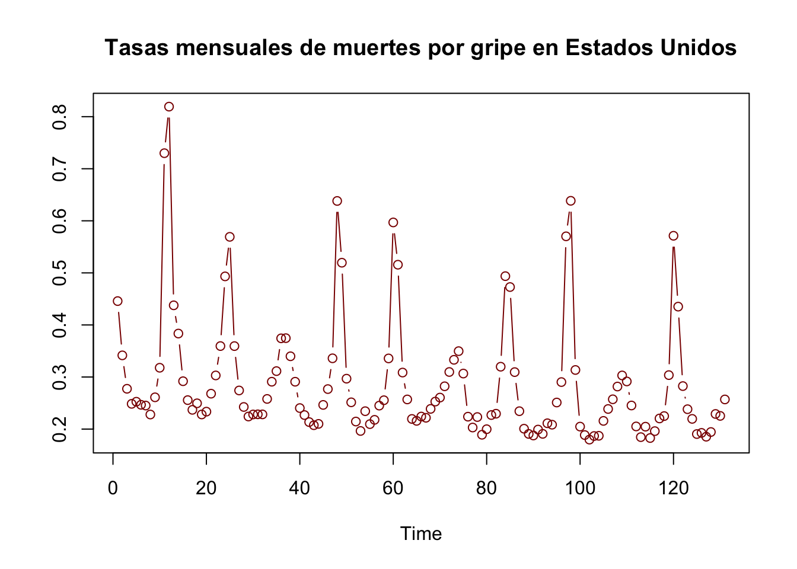
plot(D_flu, type="b", col = "darkred", ylab = "",
main = "Diferencias de las tasas mensuales de muertes por gripe en EE.UU.")
El paquete tsDyn simplifica la estimación en pocos pasos:
#?setar
D_flu_tar4_05 <- setar(D_flu, m = 4, thDelay = 0, th = 0.05) ## Warning:
## With the threshold you gave (0.05) there is a regime with less than trim=15% observations (86.51%, 13.49%, )## Warning: Possible unit root in the high regime. Roots are: 0.6182
## 0.6244 0.6244 0.6182
summary(D_flu_tar4_05) ##
## Non linear autoregressive model
##
## SETAR model ( 2 regimes)
## Coefficients:
## Low regime:
## const.L phiL.1 phiL.2 phiL.3 phiL.4
## 0.004432028 0.501179574 -0.206693004 0.120140800 -0.122254140
##
## High regime:
## const.H phiH.1 phiH.2 phiH.3 phiH.4
## 0.4079353 -0.7483325 -1.0323129 -2.0450407 -6.7117769
##
## Threshold:
## -Variable: Z(t) = + (1) X(t)+ (0)X(t-1)+ (0)X(t-2)+ (0)X(t-3)
## -Value: 0.05 (fixed)
## Proportion of points in low regime: 86.51% High regime: 13.49%
##
## Residuals:
## Min 1Q Median 3Q Max
## -0.1319314 -0.0217073 0.0015801 0.0196093 0.2674245
##
## Fit:
## residuals variance = 0.002166, AIC = -778, MAPE = 412.4%
##
## Coefficient(s):
##
## Estimate Std. Error t value Pr(>|t|)
## const.L 0.0044320 0.0051791 0.8558 0.3938357
## phiL.1 0.5011796 0.0833821 6.0106 2.043e-08 ***
## phiL.2 -0.2066930 0.0608839 -3.3949 0.0009313 ***
## phiL.3 0.1201408 0.0576505 2.0839 0.0392868 *
## phiL.4 -0.1222541 0.0522363 -2.3404 0.0209137 *
## const.H 0.4079353 0.0314121 12.9866 < 2.2e-16 ***
## phiH.1 -0.7483325 0.1118329 -6.6915 7.455e-10 ***
## phiH.2 -1.0323129 0.1420203 -7.2688 4.018e-11 ***
## phiH.3 -2.0450407 0.7055163 -2.8986 0.0044573 **
## phiH.4 -6.7117769 0.8367945 -8.0208 7.911e-13 ***
## ---
## Signif. codes: 0 '***' 0.001 '**' 0.01 '*' 0.05 '.' 0.1 ' ' 1
##
## Threshold
## Variable: Z(t) = + (1) X(t) + (0) X(t-1)+ (0) X(t-2)+ (0) X(t-3)
##
## Value: 0.05 (fixed)
plot(D_flu_tar4_05)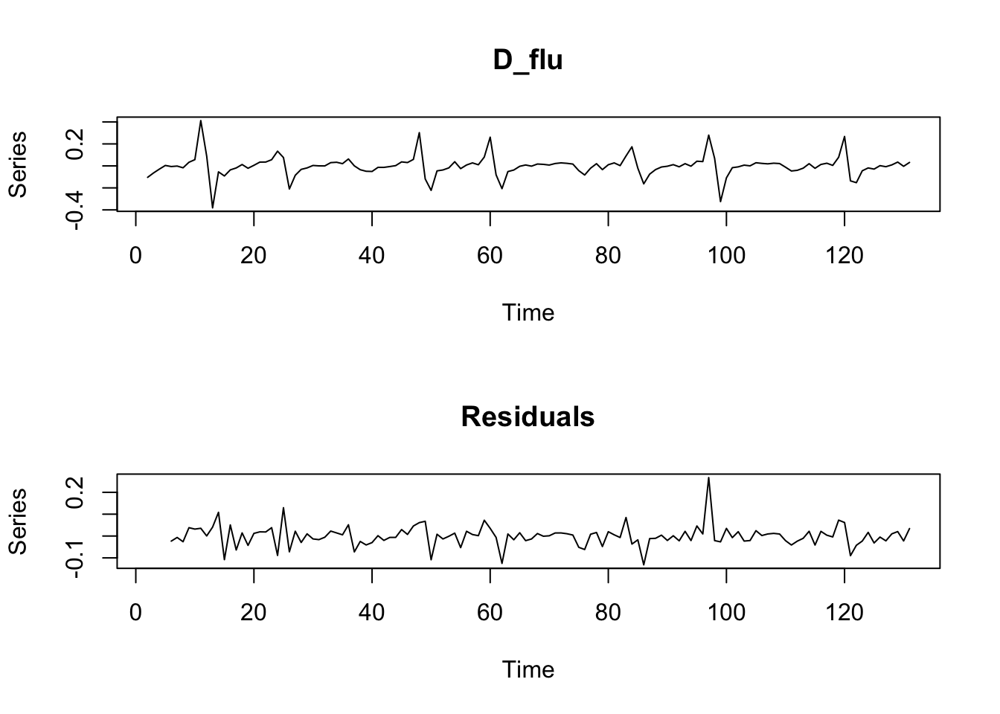
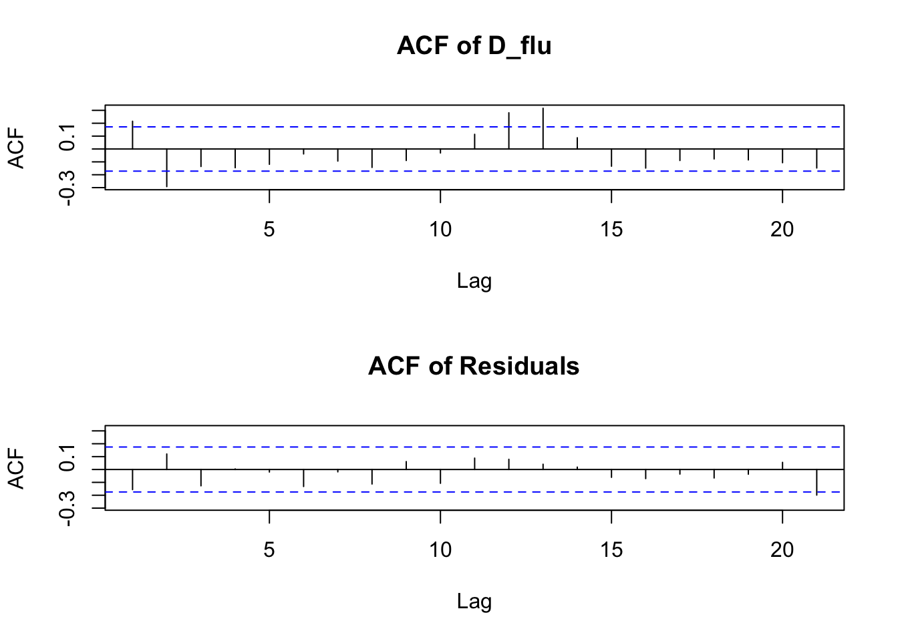
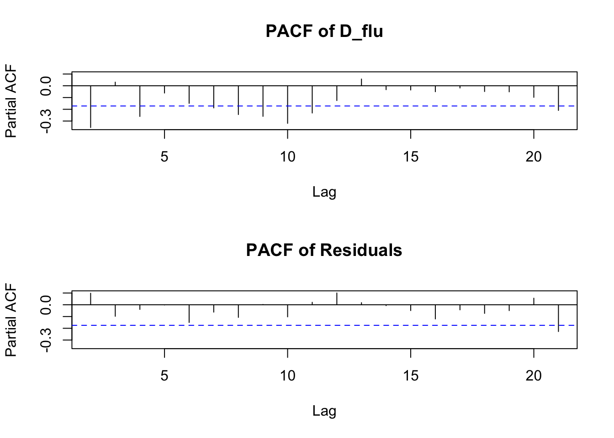
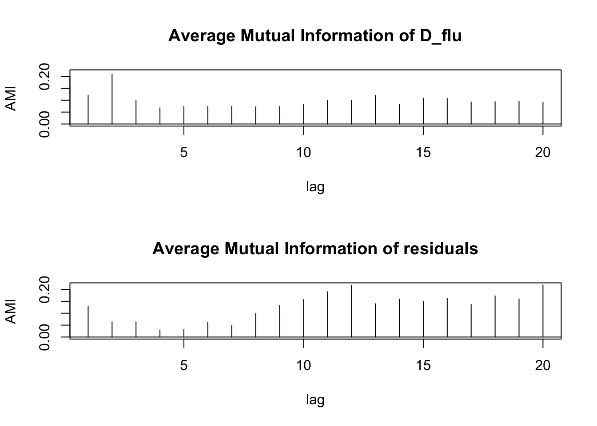
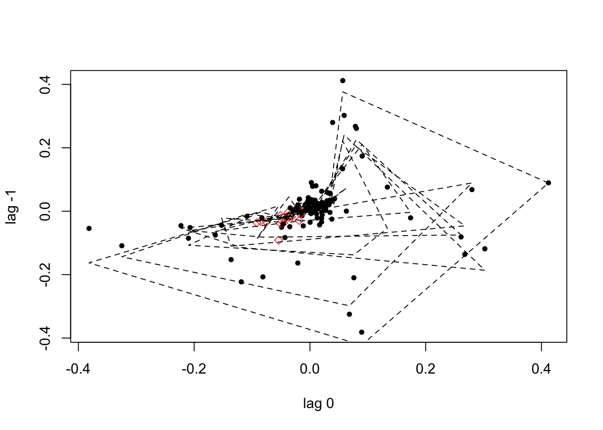
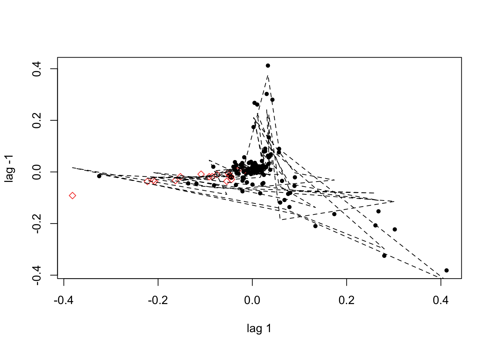
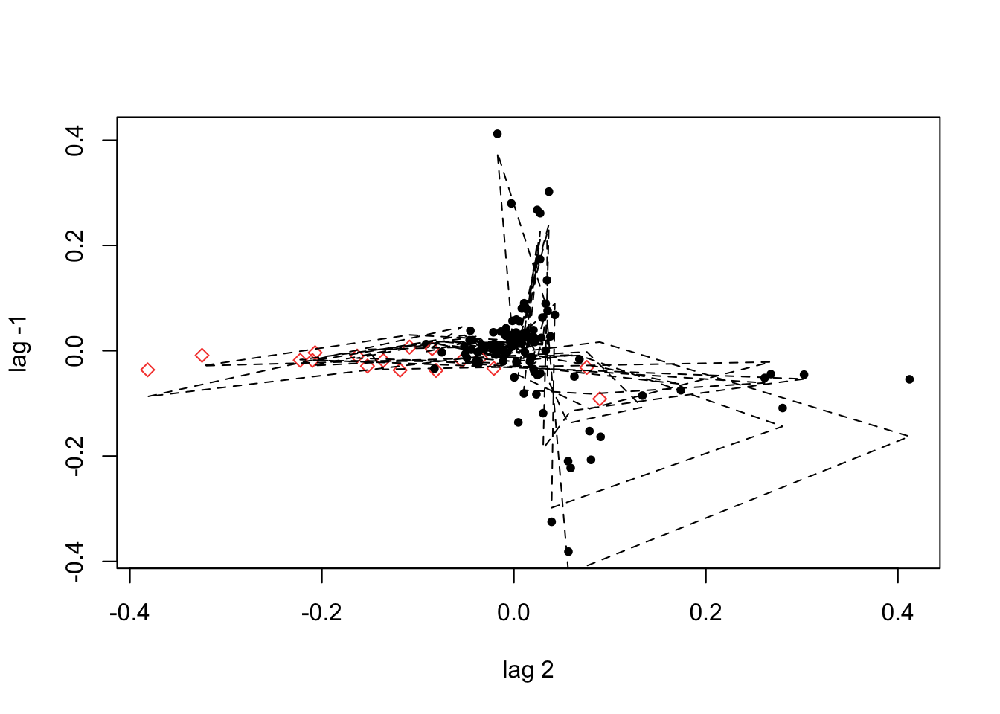
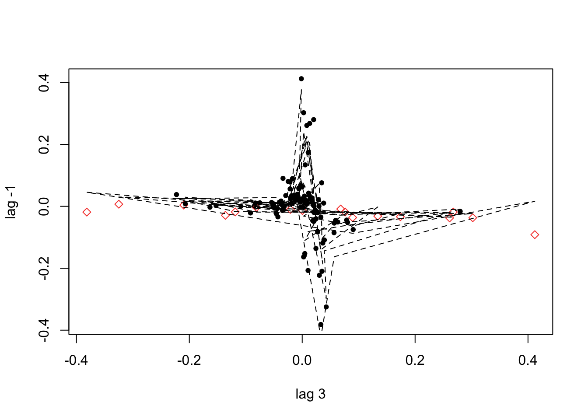
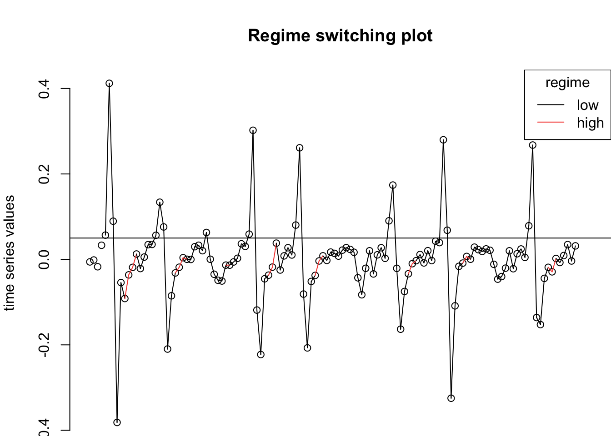
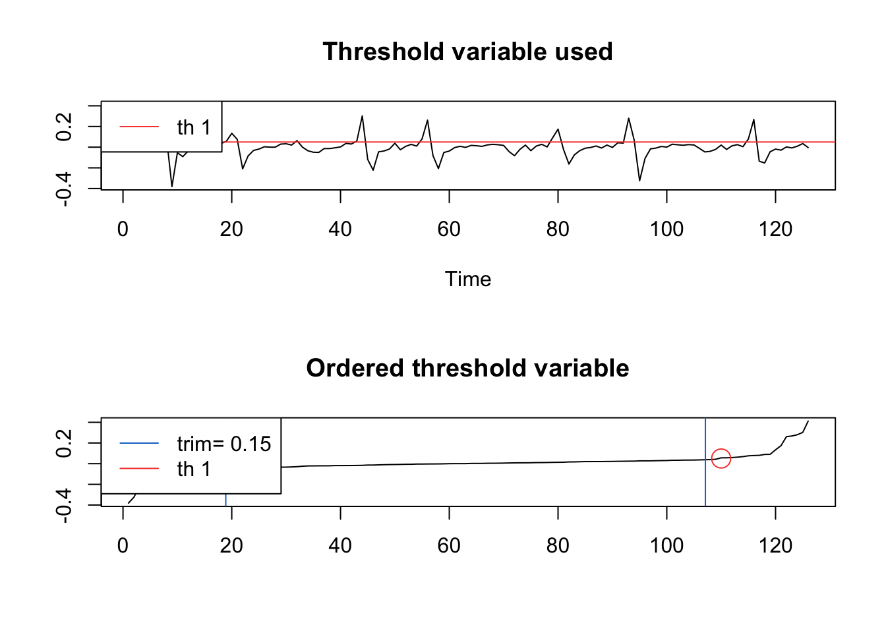
Si no se especifica el umbral (th), setar lo busca automáticamente en una grilla (resultado típico: ~0.038):
D_flu_tar4 <- setar(D_flu, m = 4, thDelay = 0)## Warning: Possible unit root in the high regime. Roots are: 0.6316
## 0.7222 0.7222 0.6316
summary(D_flu_tar4)##
## Non linear autoregressive model
##
## SETAR model ( 2 regimes)
## Coefficients:
## Low regime:
## const.L phiL.1 phiL.2 phiL.3
## -0.00006287604 0.44640751264 -0.23158878472 0.10701408961
## phiL.4
## -0.14406085874
##
## High regime:
## const.H phiH.1 phiH.2 phiH.3 phiH.4
## 0.3486150 -0.5903335 -1.0318488 -2.4053812 -4.8052422
##
## Threshold:
## -Variable: Z(t) = + (1) X(t)+ (0)X(t-1)+ (0)X(t-2)+ (0)X(t-3)
## -Value: 0.03798
## Proportion of points in low regime: 84.92% High regime: 15.08%
##
## Residuals:
## Min 1Q Median 3Q Max
## -0.277686 -0.020554 0.005116 0.020762 0.119627
##
## Fit:
## residuals variance = 0.002405, AIC = -762, MAPE = 372.5%
##
## Coefficient(s):
##
## Estimate Std. Error t value Pr(>|t|)
## const.L -0.000062876 0.005572290 -0.0113 0.9910158
## phiL.1 0.446407513 0.089159422 5.0068 1.921e-06 ***
## phiL.2 -0.231588785 0.064328877 -3.6001 0.0004636 ***
## phiL.3 0.107014090 0.061034049 1.7534 0.0820953 .
## phiL.4 -0.144060859 0.055198346 -2.6099 0.0102109 *
## const.H 0.348615027 0.027460007 12.6954 < 2.2e-16 ***
## phiH.1 -0.590333531 0.109881869 -5.3724 3.869e-07 ***
## phiH.2 -1.031848767 0.149570541 -6.8987 2.641e-10 ***
## phiH.3 -2.405381238 0.691344783 -3.4793 0.0007014 ***
## phiH.4 -4.805242210 0.828241480 -5.8017 5.451e-08 ***
## ---
## Signif. codes: 0 '***' 0.001 '**' 0.01 '*' 0.05 '.' 0.1 ' ' 1
##
## Threshold
## Variable: Z(t) = + (1) X(t) + (0) X(t-1)+ (0) X(t-2)+ (0) X(t-3)
##
## Value: 0.03798
plot(D_flu_tar4)


7.6 Resumen del capítulo
Este capítulo amplió el análisis de series de tiempo a dos dimensiones adicionales: la dimensión transversal (datos panel) y la no linealidad (modelos de cambio de régimen).
Datos panel. Los datos panel combinan series de tiempo para múltiples individuos o unidades (\(N\) individuos, \(T\) periodos). El modelo básico incluye efectos fijos \(\alpha_i\) que capturan heterogeneidad no observada constante en el tiempo. Las pruebas de raíz unitaria en panel (Levin et al. 2002, Im et al. 2003, Maddala y Wu 1999, Hadri 2000) amplían el poder estadístico al explotar la dimensión transversal; plantean hipótesis nulas de no estacionariedad con hipótesis alternativas homogéneas o heterogéneas según la prueba.
Diferencia en diferencias (DiD). El estimador DiD identifica el efecto causal de un tratamiento comparando la variación en el tiempo del grupo tratado con la del grupo de control. Su validez descansa en el supuesto de tendencias paralelas: en ausencia del tratamiento, ambos grupos habrían seguido trayectorias paralelas.
Panel VAR. El Panel VAR (PVAR) combina las ventajas del VAR clásico con la dimensión transversal del panel. Dado que el estimador within es sesgado en paneles dinámicos con \(T\) pequeño (sesgo de Nickell), se estima mediante GMM con instrumentos basados en los rezagos de las propias variables, controlando por efectos fijos mediante transformación de primeras diferencias o desviaciones ortogonales; la validez de los instrumentos se evalúa con la prueba de Hansen y las pruebas de autocorrelación de orden 1 y 2. La selección del número de rezagos sigue el criterio de Andrews y Lu (2001).
Cointegración en panel. Cuando las series del panel son \(I(1)\), las pruebas de Pedroni, Kao y Westerlund permiten contrastar la existencia de relaciones de largo plazo. Las pruebas residuales verifican la estacionariedad de los residuales de la regresión de cointegración, mientras que el enfoque de corrección de errores verifica que las desviaciones del equilibrio se corrijan (\(\alpha < 0\)); ambos enfoques se ilustraron con el panel de Grunfeld.
Modelos no lineales. Cuando la dinámica de una serie cambia de forma discreta según el estado del sistema, los modelos de cambio de régimen son más apropiados que los modelos lineales.
TAR (Threshold Autoregressive): el régimen depende de si una variable observable supera un umbral \(c\). En la variante SETAR, el umbral lo determina la propia serie rezagada.
STAR (Smooth Transition AR): la transición entre regímenes es gradual y está gobernada por una función logística paramétrica \(G(y_{t-1};\gamma,c)\).
Markov Switching (MSM): el régimen \(s_t\) es una variable latente que sigue una cadena de Markov de primer orden. Las probabilidades de transición \(p_{ij} = \mathbb{P}(s_t = j \mid s_{t-1} = i)\) son estimadas junto con los parámetros del modelo AR condicional al régimen.
En todos los casos, el procedimiento empírico incluye: estimar un AR(p) lineal, probar la hipótesis de linealidad, estimar el modelo no lineal seleccionado, evaluar resultados y, finalmente, generar pronósticos o funciones de impulso-respuesta.